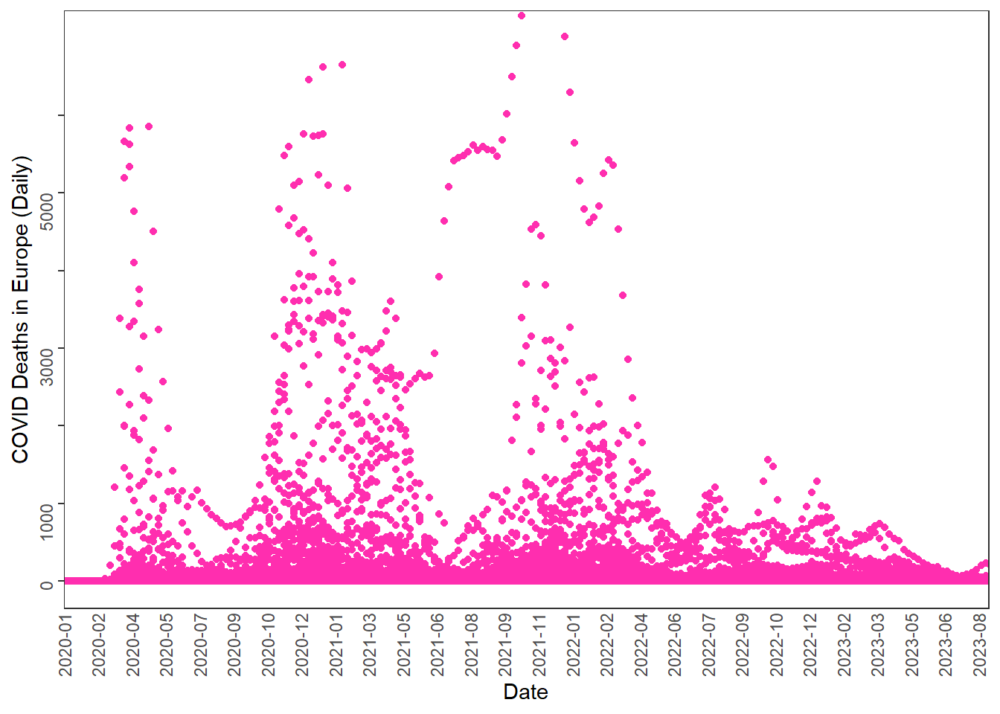

## Download COVID data from OWID GitHub
owidall = read.csv("https://github.com/owid/covid-19-data/blob/master/public/data/owid-covid-data.csv?raw=true")
# Deselect cases/rows with OWID
owidall = owidall[!grepl("^OWID", owidall$iso_code), ]
# Subset by continent: Europe
owideu = subset(owidall, continent=="Europe")
library(ggplot2)
library(dplyr)
Attaching package: 'dplyr'The following objects are masked from 'package:stats':
filter, lagThe following objects are masked from 'package:base':
intersect, setdiff, setequal, unionowideu <- owideu %>%
mutate(date = as.Date(date, format = "%Y-%m-%d")) %>%
filter(!is.na(new_deaths))
ggplot(owideu, aes(x = date, y = new_deaths)) +
geom_point(color = "#FF2EAF") +
labs(x = "Date", y = "COVID Deaths in Europe (Daily)") +
scale_x_date(
breaks = seq.Date(
from = as.Date("2020-01-01"),
to = as.Date("2023-08-31"),
by = "7 weeks"
),
date_labels = "%Y-%m",
expand = c(0, 0)
) +
scale_y_continuous(breaks = seq(0, 6500, by = 1000),
labels = c("0", "1000", "", "3000", "", "5000", "")) +
coord_cartesian(
xlim = as.Date(c("2020-01-01", "2023-08-31")),
ylim = c(0, 7000)) +
theme_test() +
theme(
axis.text.x = element_text(angle = 90, vjust = 0.5, hjust=1),
axis.text.y = element_text(angle = 90),
axis.ticks.x = element_blank()
)